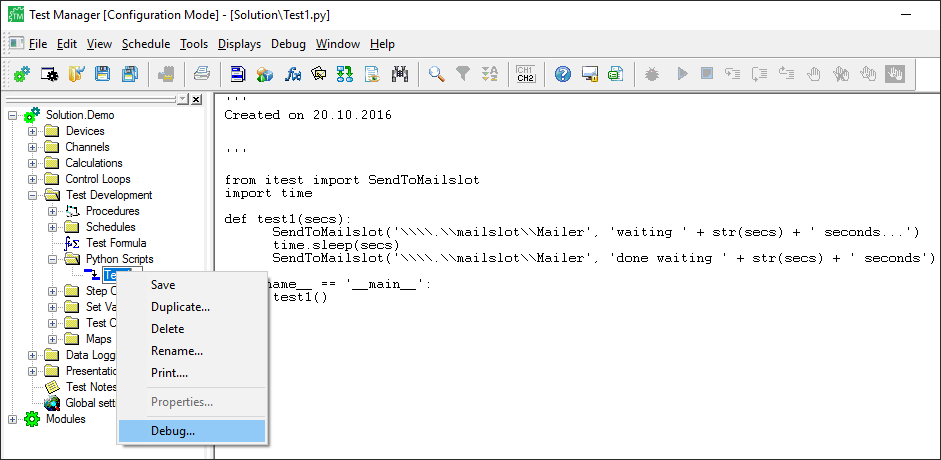
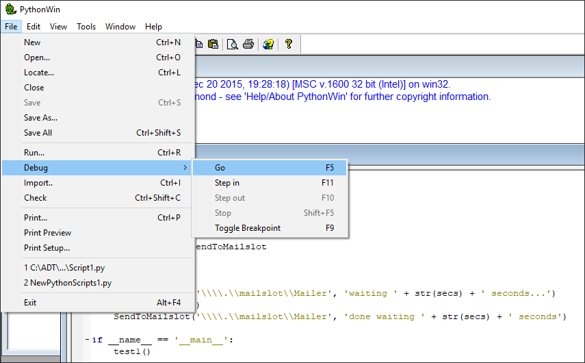

iTest User's Guide
You can integrate Python with Test Manager to quickly and efficiently add and debug Python scripts. These scripts can be stored in two locations: either the system support directory (i.e., $SUPPORTDIR) or in the iTest installation folder (i.e., $SYSTEMDIR). This folder is visible in Test Manager only when it is located in the $SUPPORTDIR.
If the Python Scripts folder does not display in Test Manager, do the following:
<Folder>Python Scripts</Folder>
Once you add this line, the Python Scripts folder will be available when you launch Test Manager situated beneath the Test Development folder in the tree bar.
 |
NOTE: | The folder in Test Manager corresponds to the Python Scripts folder located only in the support directory. |
When creating Python scripts in Test Manager, the standard VCL editor options and debugging tools are available.
To perform different actions, right-click a script in the Python Scripts folder to access the menu options.
Python Scripts Test Manager

The following table lists the various right-click menu options available for Python scripts:
Python Script Right-click Menu Options
| Option | Description |
| Save | Saves changes to the Python script. |
| Duplicate... | Duplicates a selected Python script. |
| Delete | Deletes a selected Python script. |
| Rename | Renames a selected Python script. |
| Print... | Launches the Print dialog to specify printer settings and print a Python script. |
| Properties... | This feature is disabled for Python scripts. |
| Debug... | Launches a selected Python script in the debugging tool PythonWin. |
To debug your Python scripts, right-click the name of the script and select the Debug... option. This launches the PythonWin debugging tool. Debugging does not occur automatically, so you must select File > Debug > Go to debug the script, or you can press the F5 shortcut key.
Debugging with PythonWin

iTest only supports Python scripts that are saved as UTF-8, so when editing or creating scripts in a text editor, you must save any .py script files as UTF-8—not the default system encoding.
When calling a Python script, you must specify the Python module that contains the function to be executed. If your script file is Script1.py, then the module name for this is Script1; the file extension cannot be included in the module name.
Script files can be located in sub-directories within the PythonScripts folder. When specifying a module that is contained in a sub-directory, the sub-directories must be separated using the period (.) character, not a slash as is typical in Windows. For example, if your PythonScripts folder contains a sub-directory called Dir1, which contains a script file called Script1.py, then the module specification for this file would be Dir1.Script1.